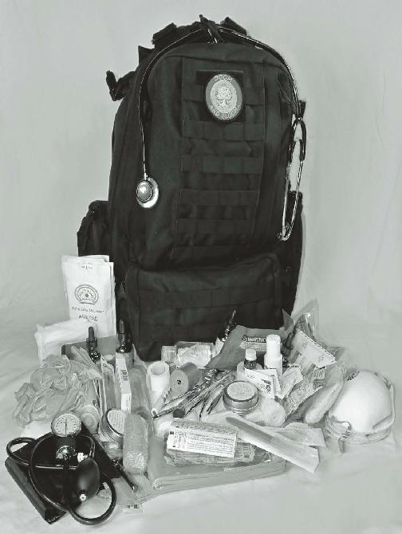

Bacterial Vaginosis: 500mg twice daily for 7 days
Vaginal Trichomoniasis: 2 g single dose (4
500mg tablets at once) or 1 g twice total.
Like all antibiotics, Metronidazole has side effects which you can review by picking up a Physician’s Desk
Reference or going to drugs.com or rxlist.com. One particular side effect has to do with alcohol: drinking alcohol while on Metronidazole will very likely make you vomit. Metronidazole should not be used in pregnancy.
but can be used in those allergic to Penicillin.
Sulfa Drugs
Sulfamethoxazole 400mg/Trimethoprim 80mg (avian equivalent: Bird-Sulfa) is a combination of medications in the Sulfonamide family. This drug is well-known as its
U.S. brand names Bactrim and Septra. Our British friends may recognize it by the name Co-Trimoxazole.
Sulfamethoxazole acts as an inhibitor of an important bacterial enzyme. Trimethoprim interferes with the production of folic acid in bacteria, which is necessary to produce DNA. The two antibiotics together are stronger in their effect than alone (at least in laboratory studies).
Sulfamethoxazole 400mg/Trimethoprim 80mg is effective in the treatment of the following:
Some upper and lower respiratory infections
(chronic bronchitis and pneumonia)
Kidney and bladder infections
Ear infections intestinal infections caused by E. Coli and
Shigella bacteria skin and wound infections
Traveler’s diarrhea
Acne
The usual dosage is one tablet twice a day for most of the above conditions in adults for 10 days (less in traveler’s diarrhea).
The recommended dose for pediatric patients with urinary tract infections or acute otitis media is 8 mg/kg trimethoprim and 40 mg/kg sulfamethoxazole per 24 hours, given in two divided doses every 12 hours for 10 days. remember that 1 kilogram equals 2.2 pounds. This medication is contraindicated in infants 2 months old or younger.
In rat studies, the use of this drug was seen to cause birth defects; therefore, it is not used during pregnancy.
Sulfamethoxazole 400mg/Trimethoprim 80mg is well known to cause allergic reactions in some individuals.
These reactions are almost as common as seen in
Penicillin allergies.
Ampicillin
Ampicillin (veterinary equivalent: Fish-Cillin) is a member of the penicillin family. It interferes with the ability of bacteria to make cell walls. Ampicillin can be used to treat a number of infections:
Respiratory tract Infections (bacterial bronchitis)
Throat infections
Ear infections
Cellultis
Meningitis
Urinary tract infections
Typhoid fever (Salmonella)
Dysentery (Shigella)
Ampicillin is usually given to adults in doses of 500mg 4 times a day for 7-10 days. A common pediatric dosage formula is 6.25 to 12.5 mg/kg every 6 hours (maximum
2 to 3 g/day). Ampicillin is acceptable for use during pregnancy. Like most antibiotics, it has stronger effect in intravenous form, and can be used IV in some cases of septicemia (blood infection) and endocarditis (heart infection).
AntiFungal Drugs
Not every medication you use to treat infection will kill bacteria. Viruses and fungi can also cause infection, and you will have to stockpile these drugs as well. Common fungal infections like Ringworm, Athlete’s Foot, and
Jock Itch will be rampant in wet climates or in situations where you might not be able to change socks or underwear often.
Therefore, it makes sense to keep some antifungal medication around as well. Clotrimazole (Lotrimin) is a good choice here, as it comes in cream or powder, and doesn’t require a prescription. Medications like
Miconazole (Monistat) would be useful for vaginal yeast infections. There is an oral tablet as well called
Fluconazole (Diflucan), which may be more convenient than creams or powders, but requires a prescription.
Like some antibiotics, some antifungal drugs come in veterinary equivalents. Ketoconazole is a common antifungal that can be obtained in its aquatic version
(Fish-Fungus 200mg). It kills certain fungi by interfering with the formation of the fungal cell membrane.
Ketoconazole is best taken by itself, as there are many medicines that interact with it to cause ill effects. In rare cases, Ketoconazole may cause liver dysfunction.
Ketoconazole Tablets are indicated for the treatment of systemic (throughout the body) fungal infections. It is only used for local infections when severe and the previously-mentioned antifungal medications fail. In other words, stick with the other antifungals if at all possible. Ketoconazole is used for:
Systemic candidiasis (same fungus as in vaginal infections)
Oral thrush (mouth infections, usually in infants)
Candiduria (fungus in the urine)
Fungal lung infections (various species)
Ketoconazole Tablets should not be used for fungal meningitis; it penetrates poorly into the cerebral-spinal fluid.
AntiViral Drugs
Finally, antiviral medications will be useful as well. Many of the infections, especially respiratory, that we assume to be bacterial in nature are more likely to be viral.
Antibiotics have no significant effect on viruses; despite this, many patients will demand an antibiotic prescription from their doctors as soon as they feel the first symptom. This overuse is one of the reasons that antibiotic resistance is growing.
One of the most popular antiviral influenza drugs is called Tamiflu (Oseltamvir). Tamiflu gives effective relief against symptoms of influenza and decreases the amount of time your patient would be sick. It can be taken upon exposure to the infection, even before symptoms have begun. If the drug is taken early enough, it might even prevent the illness altogether. Taken in the first 48 hours of a flu-like syndrome, it may decrease the severity and duration of symptoms.
The adult preventative dose of Tamiflu is 75mg once daily for 10 days. To treat symptoms, take 75mg twice a day for 5 days. For children, follow the above regimen in the following doses:
15 kg (33 lbs.) or less: 30 mg dosage
16-23 kg (34-51 lbs.): 45 mg dosage
24-40 kg (52-88 lbs.): 60 mg dosage
Above 40 kg (89 lbs. or more): adult dosage
Tamiflu will not have much effect if taken after the first
48 hours of flu symptoms. Also, it is not proven to be effective against anything other than influenzas. Despite this, it is wise to obtain prescriptions for every member of your family at the beginning of every flu season.
Other antiviral drugs such as Acyclovir or
Famcyclovir are usually used to treat herpes-virus related conditions, such as:
Shingles (painful skin eruption)
Adults: 800 mg every 4 hours for 5 to 10 days
Children under 40 kg (and older than 2 years):
20 mg/kg 4 times a day for 5 days.
Varicella (chickenpox)
Adults: 800 mg 4 times a day for 5 days
Children under 40 kg (and older than 2 years):
20 mg/kg orally 4 times a day for 5 days
Oral/genital Herpes (Herpes Simplex)
Adults: 200 mg every 4 hours for 10 days OR 400 mg 3 times a day for 7-10 days
Children under 40 kg (and older than 2 years):
40 to 80 mg/kg a day in 3 to 4 divided doses for 5 to 10 days. Max dose: 1 g per day
Don’t forget that natural products such as Garlic and
Honey have significant properties against certain infections. Garlic, for example, is thought to have antibacterial, antifungal, and antiviral effects. Many people report significant antibacterial/antiviral effect with colloidal silver, as well. Before there were antibiotics, there was silver; it is still used in topical creams to prevent infection.
A question that I am asked quite often and to which my answer is, again, contrary to standard medical recommendations (but appropriate where modern medical care no longer exists) is: “What happens when all these drugs I stockpiled pass their expiration date”?
The short answer is: In most cases, not very much.
Since 1979, pharmaceutical companies have been required to place expiration dates on their medications.
But what do they signify? Officially, the expiration date is the last day that the company will certify that their drug is fully potent. Some believe this means that the medicine in question is useless or in some way dangerous after that date.
This is a false assumption, at least in the vast majority of those medicines that come in pill or capsule form. Expiration dates pertain to the strength of the medication in question. You will not grow a third eye in the middle of your forehead or be poisoned simply because the drug has “expired”.
An exception to this was thought to be Tetracycline.
A (disputed) report of kidney damage after taking expired Tetracycline was published in the Journal of the
American Medical Association in 1963. Since that time, the formulation for the drug has changed, and I could find no similar recent reports in the medical literature. I did, however, find a study that used Doxycycline, a member of the Tetracycline family, in dialysis patients without ill effects. I personally prefer Doxycycline over
Tetracycline as it is a newer generation drug, and might have less resistance issues.
About 25 years ago, the U.S. military commissioned a study regarding expiration dates. They had over one billion dollars worth of medications stockpiled and were faced with the challenge of destroying huge quantities every 2 years or so. The results were featured in the
Wall Street Journal (3/29/00). The study was conducted by the Food and Drug Administration.
The results revealed that 90% of medications tested were acceptable for use 8-15 years after the expiration date. The FDA tested over 100 medications, prescription and non-prescription, and continues to study the issue today. The exceptions were mostly in liquid form (some pediatric antibiotics, insulin, among others). These lose their potency very soon after the date on the package.
One sign of this is a change in the color of the liquid, but this is not proof one way or another.
Recently, a program called the Shelf Life Extension
Plan evaluated a number of
FEMA-stockpiled medications; these were mostly antibiotics that had been stockpiled for use in natural disaster that had passed their expiration dates. They found that almost all medications in pill or capsule form were still good 2 to
10 years after their expiration dates. The conclusion of the study states:
“The SLEP data supports the assertion that many drug products can be extended past the original expiration date….”.
It also states that these extensions may vary from drug to drug.
Even more incredibly, Researchers at the University of California San Francisco School of Pharmacy found cases of 14 different medications in a retail pharmacy in their original, unopened packaging. These cases were labeled with expiration dates 28-40 years old.
The scientists used high-tech methods to measure the amounts of the active ingredients in the drugs. When analyzed, 12 of the 14 active ingredients persisted in concentrations that were 90% or greater of the amount indicated on the label. These results were conclusive enough for inclusion in the prestigious journal “Archives of Internal Medicine” (October 2012).
As a result of all these findings, even the government has changed their stance on expiration dates. During a recent flu epidemic, a 5 year extension was issued for the use of expired Tamiflu, a drug used to prevent and treat Swine Flu and other influenzas.
Surprisingly, few other extended use authorizations have been approved or, at least, publicized for the other medications, even though such information would be helpful for millions of people preparing for tough times.
Another disturbing fact: The information from the study is not usually available to the general public, as the website that originally published it now requires a special access code to enter. Despite this, you can try to access a back copy of The Journal of Pharmaceutical Sciences,
Vo l. 95, No. 7, July 2006, where you will find a summary of the SLEP data. Most college medical libraries carry the journal. Here is the abstract, a short description of the study and its conclusions:
ABSTRACT: The American Medical Association has questioned whether expiration dating markedly underestimates the actual shelf life of drug products.
Results from the shelf life extension program (SLEP)
have been evaluated to provide extensive data to address this issue. The SLEP has been administered by the Food and Drug Administration for the United States
Department of Defense (DOD) for 20 years.
This program probably contains the most extensive source of pharmaceutical stability data extant. This report summarizes extended stability profiles for 122 different drug products (3005 different lots). The drug products were categorized into five groups based on incidence of initial extension failures and termination failures (extended lot eventually failed upon re-testing).
Based on testing and stability assessment, 88% of the lots were extended at least 1 year beyond their original expiration date for an average extension of 66 months, but the additional stability period was highly variable. The SLEP data supports the assertion that many drug products, if properly stored, can be extended past the expiration date. Due to the lot-to-lot variability, the stability and quality of extended drug products can only be assured by periodic testing and systematic evaluation of each lot.
A PDF file of the entire study is also available online, at least at the time of this writing, at:
http://ofcaems.org/ds-Stability_Profiles.pdf
The SLEP data found most of the failures among drugs that were in liquid form. Medications in pill or capsule form lasted the longest. It is true that the strength of a medication could possibly decrease over time, so it is important that your supplies are stored in a cool, dry, dark place. The effective life of a drug usually is in inverse relation to the temperature it is stored at. In other words, a drug stored at 50 degrees Fahrenheit will last longer than one stored at 90 degrees Fahrenheit.
Storing in opaque or “smoky” containers is preferable to clear containers. Humidity will also affect medications, and could even cause mold and mildew to form, especially on natural remedies such as dried herbs and powders.
Planning ahead, we must consider all alternatives in the effort to stay healthy in hard times. Don’t ignore any option that can help you achieve that goal, even expired medicine. I encourage everyone to conduct their own study into the truth about expiration dates; come to your own conclusions after studying the facts.
In this book, I recommended a frank discussion with your current physician about the importance of being medically prepared for emergency situations, both short and long term. Many, however, will not know how to broach the subject, in fear of being ridiculed by the medical establishment.
Therefore, I have written a letter specifically meant for healthcare providers to introduce them to the concerns of our community. This is a letter that any person concerned about disaster situations can present to their physician. It addresses issues associated with the possible inadequacy of emergency medical response in situations such as the aftermath of a major storm or other disasters. Feel free to present it to your family physician if you think it would be beneficial to have them better understand preparedness issues.
To my fellow physicians:
I am a Fellow of both the American College of
Surgeons and the American College of OB/GYN, recently retired, and I am writing this letter in an effort to inform you about the importance of improving the level of medical preparedness in your patient population.
We live in uncertain times, and more and more people are becoming concerned about what would happen in the event of a major disaster. From tornadoes to wildfires to national emergencies, there are circumstances where medical personnel may be overwhelmed by the number of victims requiring medical aid. In these situations, many of your patients will be unable to reach you. They may find themselves as the sole resource available to care for sick or injured members of their families.
In the aftermath of Hurricane Katrina in 2005, disaster medical assistance teams (DMATs) were formed from many areas in the country and converged upon
New
Orleans.
They were immediately overwhelmed by the number of victims requiring medical help. In such a scenario, it stands to reason that your patients would benefit from a concerted effort on your part to help them be prepared to deal with likely problems they would face.
In an era of high technology, we may have expectations that our resources will always be sufficient to meet our emergency needs. Recent history has proven otherwise, and it may be time for us, as physicians, to increase the amount of education we provide for our patients; in this way, they can function as assets to their family if you or emergency medical personnel are not available.
Few medical offices provide information regarding the types and quantities of medical supplies that are recommended for the average household. These are my suggestions: Consider your area’s likely needs for the disasters that might befall it, and print lists of items that you would advise your patients to have in their homes.
As well, provide resources for classes that your patients can take so that they will have the medical education necessary to deal with possible emergencies during these events.
Direct them to sites recommended by the federal government for emergency preparedness, such as www.ready.gov; they will find free informational booklets that will help to increase their chances of surviving natural calamities and other disasters.
For your individual patients, especially those with chronic medical problems, you might consider providing the opportunity for them to keep a supply of needed medications by offering them an extra prescription to fill.
In this manner, you can assure that your patients will have enough medicine to get them through situations which prevent them from contacting you in times of trouble.
I’m not asking you to abandon your responsibility by throwing prescriptions at them; I am simply suggesting that they would benefit from having some extra supplies available to deal with unforeseen circumstances. Also, consider listing recommended over-the-counter medications that would be useful to have on hand.
Our purpose as physicians is to improve the health of our people while doing no harm. Many doctors dedicate their entire lives to this purpose, and we must work to preserve the well-being of our patients in bad times as well as good times. The worst nightmare of your patients is the inability to reach you in a major disaster; help them become better prepared to deal with medical emergencies with education, compassion, and understanding.
Thank you for all you do to keep your patients healthy, and for your time and attention in reading this letter.
Joseph Alton, M.D., F.A.C.S., F.A.C.O.G.
This letter is available to print out at:
www.doomandbloom.net.

Certainly, you have accumulated a reasonable amount of medical supplies to prepare you for the role of survival medic. If you have been prudent, you have taken emergency courses offered by your municipality and availed yourself of other hands-on teaching resources. Now, it is time to build your survival print and video libraries.
This book has taken an unusual route in assuming that no modern medical care or facilities will be available to you. Although we have attempted to be comprehensive in our approach, there is still much to learn. In power-down situations, you should have a number of printed medical books that you can refer to in times of trouble. In this section, we have given you a list that will be welcome assistance in your efforts to keep your people healthy.
While you have power, you should also avail yourself of the many resources available on the internet.
For many procedures, there is no substitute to seeing something done in real time, such as placing a cast.
Make every effort to download how-to videos on various medical subjects. No prepared individual should be without a source of power in hard times, so have a solar cell or other method to give you the ability to review these when you need them.
Arm yourself with an arsenal of medical knowledge.
We refer to our library constantly to stay current on the options available to us, and so should you.
I mentioned earlier that some reference books will be necessary for any aspiring medic. A printed medical library will still be there in a collapse situation, even if the internet, television, and other media are not. There are many good written resources for handling medical problems; these are but a few. The following books will be good additions to every medic’s library: Stedman’s
Medical Dictionary
(a must for any medic)
Gray’s Anatomy for Students
(yes, the television show’s title was taken from this book)
The Physician’s Desk Reference
(comes out yearly, tells you indications, dosages, and risks of just about every medicine)
The Merck Manual
(good pocket reference on many common medical problems)
The Mayo Clinic Family Health book
(exhaustive and thorough with lots of photos)
Clinical Physiology Made Ridiculously Simple by Stephen Goldberg, M.D. (all the basics on how the body works)
American College of Emergency Physicians First Aid
Manual (excellent first aid book)
Where there is No Doctor by David Werner (third-world medicine)
Where there is no Dentist by Murray Dickson (third-world dentistry)
A Comprehensive Guide to Wilderness and Travel
Medicine by Eric Weiss, M.D. (helpful pocket version)
Wilderness Medicine by William W. Forgey, M.D. (outdoor survival)
Encyclopedia of Herbal Medicine by Andrew Chevallier (talks about how medicinal plants work; information on every herb)
Prescription for Herbal Healing by Phyllis A. Balch, CNC (extensive herbal remedy book)
Essential Oils Desk Reference by Essential Science Publishing (exhaustive listings with photos)
Best Remedies by Mary L. Hardy, M.D. and Debra L. Gordon (plain
English home remedies for 100 different medical problems; excellent integrative medical reference)
Principles of Surgery by Schwartz et al (for the very, very ambitious)
Tactical Medicine Essentials by the American College of Emergency Physicians (for really high-risk situations)
Varney’s Midwifery or Varney’s Pocket Midwife
(you never know when you’ll need it)
If you have all these books in your medical library, you will have as much information at your fingertips as you’ll need to keep your loved ones healthy in times of trouble.
One of the best resources available to information seekers is the online video. This phenomenon has placed a veritable library at your fingertips with regards to medical information. Even better than a library, you can actually see important medical procedures being performed, such as in my video “How to Suture with
Dr. Bones”. They range from a short blurb of a minute or so to a full one hour medical school lecture. The next few pages are essentially an entire second book filled with medical knowledge.
I have endeavored to find a representative video for just about every subject that I cover in this book.
Different sources are listed, so that you can see the many options available for health information in all fields.
The source is listed in parentheses after the title of the video, along with a short comment.
Search
YouTube.com for the title EXACTLY as listed. If more than one video exists with the same title, look to see what the source is.
I have to say that I don’t agree with everything said on every video; do your own research and make you own decisions. The important thing to remember is that these sources are interested in what is relevant in today’s modern world. Many of them end with “and head for the hospital” or “see your doctor as soon as possible”. Few if any are considering a societal collapse in their presentations, so be forewarned. In any case, the following videos will provide you an excellent base of knowledge from which to move forward: 7.Medical
Interview -Review of Systems (by tvmariel) (One of various videos, it shows a doctor conducting an interview with a patient before an exam. Watch as many as you can.) 01.Physical Exam-Introduction & Vital
Signs (by tvmariel) (Just one of many videos, it shows a doctor performing portions of the physical exam.
Watch them all.) Survival Medicine Gauze by Nurse
Amy
(by drbonespodcast) (Review of all the different dressing materials)
What Are Essential Oils (Anyway)? (by kennethgardner)
(I can’t verify all the claims made here; do you own research and decide for yourself.)
Using Colloidal Silver (by Chris Hyslop)
(All about how to use this alternative)
The Dangers of Colloidal Silver (by pogue972)
(A story about a man with argyria.)
Jacket Stretcher Wilderness First Aid Paul Tarsitano 1 of
Rope and Stick Stretcher Paul Tarsitano 2 of 3
Tarp Stretcher Wilderness First Aid Paul Tarsitano 3 of
3 (all by pault1960)
(3 videos by an expert in improvised patient transport)
Carrying the Injured (1933) (by wellcomefilm)
(Amazing old video with various patient carry techniques)
Extremities Lift and Carry (Pocket Tools Training NCOSFM) (by ncosfm)
(Quick how-to for 2-man carry)
Blanket Drag (Pocket Tools Training – NCOSFM (by ncosfm)
(Another video in an excellent series)
FIREMAN CARRY COACH
(by lesmillsspartan)
(How to perform a one-man carry)
Lice-Mayo Clinic (by mayoclinic)
(Treatment basics)
Bed Bug Basics (by orkincommercial)
(Insect specialist discusses bedbugs)
How To Remove A Tick (by tickEncounter)
(Step-by-step procedure)
Mt. Everest Dental Extraction at Base Camp (by cristenhfdg)
(Tooth extraction in an austere environment)
How to INSTANTLY CURE A TOOTHACHE at home remedy (by askmydentisttv)
(Dentist teaches you how to make temporary filling cement)
Respiratory Infection Health Byte (by livestrong)
(Basics of upper and lower respiratory infections)
Signs of Dehydration - and How to Prevent It (by nsipartners)
(Identifying water loss)
How To Treat Diarrhea (by howcast)
(General information)
First Aid Tips: How to Treat Food Poisoning
(by ehow) (Basic information on first steps)
How To Recognize the Symptoms Of Appendicitis
(by howcast)
(How to differentiate from other problems)
Appendectomy (Stab Appendectomy) by Dr. Irfan
Ahmad Nadeem
(by ianadeem)
(Performed under local anesthesia; appendix pops out at
3:50 mark)
Kidney Infection Health Byte (by livestrong)
A Health Byte: Urinary Tract Infection (by livestrong)
(Basics on urinary and kidney issues)
How to Treat Heatstroke (by howcast)
(Just what the title says.)
Hypothermia Treatment Scenario (by remotemedical)
(Actual wilderness video)
Health and Safety Abroad: Altitude Sickness
(by HTHworldwide)
(Signs to look for)
First Aid - Minor wounds standard care (by businessrecovery)
(Basics)
Blister Treatment/Survival Medicine By Nurse Amy (by drbonespodcast)
(simple ways to treat a blister.)
First Aid - Severe bleeding (by businessrecovery)
(Step by step)
How to Treat Gunshot & Knife Wounds (by sootch00)
(Just in case)
The Emergency Bandage (aka The Israeli Bandage)
(by PerSysMedical)
(Best trauma bandage)
Quikclot Combat Gauze training (by wingmanusn)
(hemostatic agents in action)
Quikclot Demonstration (by peacemakerdill)
(Not for the squeamish)
How to Suture With Dr. Bones (by drbonespodcast)
(Learn how to put stitches into a pig’s foot.)
How to Staple Skin with Dr. Bones (by drbonespodcast)
(Learn how to put staples into a pig’s foot.)
Surgical Debridement (by nucleusanimation)
(Removing dead tissue from a wound)
Adventure Medical Preventing and Treating Blisters
(by jamestowntv)
(Treatment process using certain brand name items)
First Aid Tips: How to Treat a Burn in the Wilderness
(by ehow)
(Fire captain discussing burn injuries in the wild)
Burns:
Classification and
Treatment
(by nucleusanimation)
(All the degrees and basic treatment explained)
How To Treat a Snakebite (by howcasst)
(step by step recommendations)
Black Widow spider bite - Day 3 (by varvelle)
(Classic appearance shown)
Be Safe from Anaphylaxis-Mayo Clinic (by Mayo Clinic)
(Important information)
Dermatology Treatments: How to Diagnose Skin Rashes
(by ehowhealth)
(Some common skin rashes explained)
Abdominal wall cellulitis (by theedexitvideo)
(Example of cellulitis and abscess drainage procedure)
Symptoms of Tension vs. Migraine Headache
(by fyinowhealth)
(List of symptoms of each)
Sprains and Strains (by universityhospitals)
(Quick overview)
Sprains Fractures and Dislocations (by uctelevision)
(Full 1 hour medical school lecture with lots of great info-early portion includes an easy quiz)
Symptoms and Treatments of Hypothyroidism (by mercola)
(Discussion of this common thyroid condition)
Diabetes Overview (by answerstv)
(Comprehensive discussion)
Understanding High Blood Pressure (HBP #1) (by healthguru)
(All the facts in plain English)
Chest pain vs. heart attack - ask the doctor (by wptvnews)
(Different causes of chest pain)
Dr.
Oz
What causes acid reflux?
(by sistagirl488deleted)
(TV doctor describes how it occurs)
Understanding Epilepsy (Epilepsy #1) (by healthguru)
(Why seizures happen)
Understanding Arthritis (Arthritis #1) (by healthguru)
(Osteoarthritis and rheumatoid arthritis overview)
Healthbeat - Kidney Stones (by koattv)
(Advice to avoid recurrences)
Gallstones Health Byte (by livestrong)
(Causes, types, symptoms)
How To Perform the Heimlich Maneuver (Abdominal
Thrusts)
(by howcast)
(Excellent demonstration)
CPR Training Video New 2010 /2011 Guidelines Preview Safetycare Cardiopulmonary Resuscitation
(by safetycareonline)
(Excellent preview but not a substitute for a full course)
Eye Care & Vision Problems: How to Get Rid of
Bloodshot Eyes
(by ehowhealth)
(Discussion of eye allergies)
Conjunctivitis - Pink Eye (by drmdk)
(Question and answer session with an eye doctor)
Anterior Nasal Packing.MPG (by ausafakhan)
(Good procedure to know)
Ears 101: How to Relieve an Ear Ache (by ehowhealth)
(Common infections and treatment)
Prenatal Care: Early Pregnancy Visits (by marchofdimes)
(Explains prenatal care and shows an actual visit)
Baby delivery (by saalie100)
(Typical hospital delivery – note an episiotomy is performed, which I don’t recommend unless absolutely necessary. Also, cord does not have to be cut immediately and the baby should be placed on mother ’s stomach almost immediately for bonding purposes)
Anxiety Overview (by answertv)
(All the basics)
Signs, Symptoms, and Treatment of Depression (by nimhgov)
(Again, all the basics)
START Triage Basics (by unmcheroes)
(Excellent video on mass casualty event triage)
Trephining a nail to drain subungual haematoma
(by travellerj)
(Treating a nailbed injury)
The Effects of Sleep Deprivation (by roperstfrancis)
(Personal story of a sleep deprivation patient)
Fish Antibiotics in a Collapse by Dr. Bones (by drbonespodcast)
(Alternative options for stockpiling antibiotics)
Expiration Dates and The Truth by Dr. Bones (by drbonespodcast)
(What expiration dates really mean)
area of skin scraped off
ABRASION:
down to the dermis collection of pus and
ABSCESS:
inflamed tissue
Pain and burning caused by
ACID REFLUX:
stomach acid traveling up the esophagus name for epinephrine outside
ADRENALINE:
the U.S.
AIRWAY:
breathing passage exaggerated physical
ALLERGY:
reaction to a substance liquid inside the pregnant
AMNIOTIC FLUID:
uterus
CPR breathing unit (brand
AMBU-BAG:
name)
organism that doesn’t
ANAEROBE:
require oxygen to survive
ANALGESIA:
pain relief hypersensitivity to a
ANAPHYLAXIS::
substance due to antibodies after an initial exposure life-threatening organ failure
ANAPHYLACTIC
as a result of hypersensitivity
SHOCK:
to a substance heart pain caused by lack of
ANGINA:
oxygen substances that kill bacteria
ANTIBIOTIC:
in living tissue substances produced by the
ANTIBODY:
body that respond to toxins
ANTICOAGULANT:
substances that stop clotting substances that stop
ANTIEMETIC:
vomiting drugs that relieve minor
ANTIHISTAMINE:
allergies substances that limit
ANTIINFLAMMATORY: inflammation anything that limits the
ANTISEPTIC:
spread of germs on living surfaces decreases blood vessel
ANTISPASMODIC:
constriction substance that inactivates
ANTIVENIN:
snake or insect venom
ANTIVIRAL:
substances that kill viruses
APPENDICITIS:
inflammation of the appendix blood vessel that carries
ARTERY:
oxygen to the tissues
ARTHRITIS:
inflammation of the joints fluid accumulation in the
ASCITES:
abdomen substance that deprives the
ASPHYXIANT:
body of oxygen inhalation of fluids into the
ASPIRATION:
airways shortness of breath caused by a narrowing of airways,
ASTHMA:
often due to an allergic reaction
ASYMPTOMATIC:
without signs or symptoms
ATHEROSCLEROSIS:
blockage of the coronary arteries
AVULSION:
tissue torn off by trauma
BAG VALVE MASK:
CPR breathing apparatus
BANDAGE:
wound covering
BETADINE:
iodine antiseptic solution
BILE:
fluid found in the gall bladder diet used to treat dehydration
B.R.A.T. DIET:
consisting of bananas, rice, applesauce and dry toast
BRONCHITIS:
inflammation of the airways
BRONCHUS:
main respiratory airway injury that does not break the
BRUISE:
skin but causes bleeding due to damaged blood vessels tiny blood vessel that
CAPILLARY:
connects arteries to veins throughout the body
CARDIAC:
relating to the heart fibrous connective tissue found in various parts of the
CARTILAGE:
body, such as the joints, outer ear, and larynx.
a clouding of the lens of the
CATARACT:
eye
CELLULITIS:
inflammation of soft tissues
CPR technique that improves
CHIN-LIFT:
airflow
CHOLECYSTITIS:
inflammation of the gall bladder
CHOLELITHIASIS:
gall stones
CIRRHOSIS:
chronic liver damage broken bone that does not
CLOSED FRACTURE:
break the skin circumstance where modern
COLLAPSE SITUATION: medical care no longer exists for the long term early breast milk rich in
COLOSTRUM:
antibodies loss of consciousness
CONCUSSION:
caused by trauma to the cranium inflammation of the eye
CONJUNCTIVITIS:
membrane
CORNEA:
clear covering over the iris chest pain caused by
COSTOCHONDRITIS:
inflammation of the rib joints
COTYLEDONS:
segments of the placenta cardio-pulmonary
CPR:
resuscitation late stage of labor when the
CROWNING:
baby’s head start to emerge from the vagina scraping dead pregnancy
CURETTAGE:
tissue from the uterus after a miscarriage blue color caused by lack of
CYANOSIS:
oxygen removal of dead tissue from
DEBRIDEMENT:
a wound
DEHYDRATION:
loss of body water content
DERMATITIS:
inflammation of the skin
DERMIS:
deep layer of the skin disease in which the body fails to produce enough
Insulin to control blood
DIABETES:
sugar levels (type 1) or is resistant to the Insulin it produces (Type 2)
Identification of a medical
DIAGNOSIS:
condition
DILATION:
the act of making more open drainage from a surface or
DISCHARGE:
wound substance that kills germs on
DISINFECTANT:
non-living surfaces traumatic movement of a
DISLOCATION:
bone out of its joint
DISTAL:
away from the torso substance that increases
DIURETIC:
urine flow
DRESSING:
wound covering best drug for a particular
DRUG OF CHOICE:
illness part of the bowel after the
DUODENUM:
stomach
DYSENTERY:
dangerous diarrheal disease seizures caused by elevated
ECLAMPSIA:
blood pressures during a pregnancy pregnancy that implants
ECTOPIC PREGNANCY: outside of the womb
EDEMA:
fluid accumulation family of venomous “coral”
ELAPID:
snakes elements found in body
ELECTROLYTES:
fluids
ENDEMIC:
native to an area or species
EPIDERMIS:
superficial layer of the skin
EPILEPSY:
convulsive disorder hormone used to treat severe
EPINEPHRINE:
allergic reactions (known as adrenaline outside the US)
EPISTAXIS:
bleeding from the nose
ERYTHEMA:
redness due to inflammation tube that runs from the back
ESOPHAGUS:
of the mouth to the stomach highly concentrated liquids of various mixtures of
ESSENTIAL OILS:
natural compounds obtained from plants.
substance that loosens
EXPECTORANT:
congestion
FRACTURE:
a broken bone frozen tissue, usually in
FROSTBITE:
extremities organ near the liver that
GALL BLADDER:
stores bile death of tissue due to lack of
GANGRENE:
circulation inflammation of the
GASTROENTERITIS:
stomach/intestine
GINGIVITIS:
inflammation of the gums organ that produces
GLAND:
hormones
GLUCOSE:
blood sugar generalized convulsion in
GRAND MAL SEIZURE: epileptics nodule formed by immune system’s attempt to wall off
GRANULOMA:
an infection or a foreign object chest pain caused by
HEARTBURN:
stomach acid symptoms caused by
HEAT STROKE:
overheating action taken to remove
HEIMLICH MANEUVER: foreign object from the airways red blood cell component
HEMOGLOBIN:
that carries oxygen to the tissues
HEMORRHAGE:
blood loss
HEMORRHOID:
varicose vein near the anus
HEMOPTYSIS:
coughing up blood
HEMOSTATIC AGENT:
substance that stops bleeding
HEPATITIS:
inflammation of the liver
HERNIA:
weakness in the body wall difficulty starting a urine
HESITANCY:
stream substances formed in
HISTAMINES:
allergies that cause physical symptoms
HIVES:
bumpy red rash caused by allergies substance produced by a
HORMONE:
gland that affects body functions addition of water to the
HYDRATION:
system
HYGIENE:
cleanliness as health strategy
HYPEROPIA:
farsightedness
HYPERTENSION:
high blood pressure heat stroke or heat
HYPERTHERMIA:
exhaustion condition caused by high
HYPERTHYROIDISM:
thyroid levels bleeding into the white of the
HYPHEMA:
eye
HYPOGLYCEMIA:
low blood glucose levels syndrome caused by heat
HYPOTHERMIA:
loss condition caused by low
HYPOTHYROIDISM:
thyroid levels
IMMOBILIZATION:
prevention of movement
IMMUNITY:
protection against a disease skin infection with weeping
IMPETIGO:
sores death of heart tissue due to
INFARCTION:
lack of oxygen reaction to injury characterized by redness,
INFLAMMATION:
swelling, discharge, pain and heat
INFLUENZA:
viral respiratory illness treatment using different
INTEGRATED CARE:
medical methods
INTOXICATION:
state of being poisoned
INTRAVENOUS:
inside the vein
IRIS:
colored portion of the eye forceful application of fluid to a wound to clean out
IRRIGATION:
debris, blood clots, and dead tissue substance that causes
IRRITANT:
inflammation of tissue lacking oxygen due to
ISCHEMIC:
circulatory failure yellowing of the skin and
JAUNDICE:
eyes due to liver malfunction life-threatening condition
KETOACIDOSIS:
related to failure of blood glucose control
KILOGRAM:
2.2 pounds penetration of both skin
LACERATION:
layers by injury
LARYNX:
the voice box laser surgery to correct
LASIK:
vision extreme fatigue or
LETHARGY:
drowsiness supportive tissue that
LIGAMENT:
connects bones
LITER:
0.264 gallons
LOCALIZED:
isolated to an area drainage system for body
LYMPHATICS:
fluids
MASS CASUALTY
: more victims than available
INCIDENT
help inflammation of the
MENINGITIS:
brain/spinal cord periodic blood flow from the
MENSTRUATION:
uterus headaches caused by
MIGRAINE:
vascular Spasms
MISCARRIAGE:
early pregnancy loss protective material for
MOLESKIN:
blisters
MYOPIA:
nearsightedness pertaining to the nervous
NEUROLOGIC:
system broken bone that pierces the
OPEN FRACTURE:
skin instrument used to look into
OPTHALMOSCOPE:
the eyes
OTITIS:
inflammation of the ear instrument used to look into
OTOSCOPE:
ear canal female organ that produces
OVARY:
eggs
PALPATION:
to feel with the hands sensation of dread caused by
PALPITATIONS:
a rapid heart rate something that causes
PATHOGEN:
disease
PEDIATRIC:
pertaining to children pertaining to the bones that
PELVIC:
provide support for legs and spine
PEPTIC:
relating to stomach acid to tap on the body to identify hollow and solid areas; for
PERCUSSION:
example, when searching for a tumor.
area between the vagina and
PERINEUM:
anus
PERIOSTEUM:
outside lining of the bone epilepsy characterized by
PETIT MAL SEIZURE:
loss of awareness without generalized convulsive behavior
PHARYNX:
the throat inflammation seen in
PHLEBITIS:
varicose veins
PHLEGM:
mucus discharge from the respiratory tract snake in the rattlesnake
PIT VIPER:
family
PNEUMONIA:
an infection of the lungs free air in the lung cavity
PNEUMOTHORAX:
affecting breathing semi-conscious state after
POST-ICTAL STATE:
experiencing a grand mal seizure
POTABLE:
safe to drink pregnancy-induced
PRE-ECLAMPSIA:
hypertension likely outcome of a medical
PROGNOSIS:
condition
PRONE:
lying face down
PROPHYLAXIS:
preventative measures
PROXIMAL:
closer to the torso
PROTOZOA:
microscopic organisms that sometimes act as parasites
PULMONARY:
relating to the lungs areas where pressure on
PRESSURE points:
blood vessels stops bleeding to distal areas
PRURITIS:
itchiness
PULMONARY:
relating to the lungs inflammatory discharge
PUS:
caused by the body’s response to infection
PYELONEPHRITIS:
inflammation of the kidney body area divided into
QUADRANT:
quarters pain elicited by pressing, then made worse by
REBOUND:
releasing the pressure on a part of the body acid traveling up the
REFLUX:
esophagus recurrence of a disease’s
RELAPSE:
symptoms
RENAL:
relating to the kidneys
RESPIRATORY:
relating to breathing method of determining fertile
RHYTHM METHOD:
periods by tracking menstrual cycles salt water solution used for
SALINE:
IV fluids and irrigating wounds oily, itchy rash on scalp and
SEBORRHEA:
face
SEDATION:
to relax or put to sleep
SEIZURE:
convulsion life-threatening syndrome
SHOCK:
caused by multiple organ failure or malfunction muscle, tendons, ligaments,
SOFT TISSUE:
skin, fat damage to a ligament caused
SPRAIN:
by hyperextension instrument used to measure
SPHYGNOMANOMETER:pressure
STERILE:
free of germs
STERNUM:
breastbone instrument used for listening
STETHOSCOPE:
to heart, lungs, and for evaluating blood pressure damage to a muscle or
STRAIN:
tendon brain hemorrhage with
STROKE:
paralysis
SUBCUTANEOUS:
under the skin
SUPINE:
lying face up
SUSPENSION:
a drug mixed in a liquid wound closure with needle
SUTURE:
and thread
SYNDROME:
collection of symptoms condition affecting the entire
SYSTEMIC:
body
TACHYCARDIA:
elevated heart rate connection of a muscle to a
TENDON:
bone
THERMOREGULATORY: related to body temperature plant extract made by soaking herbs in a liquid
(such as water, alcohol, or
TINCTURE:
vinegar) for a specified length of time, then straining and discarding the plant material.
TINNITUS:
ringing in the ears item that uses pressure to
TOURNIQUET:
stop bleeding from a wound procedure meant to open an
TRACHEOTOMY:
airway when no other method is possible
TRAUMA:
injury caused by impact drilling a hole into a nail to
TREPHINATION:
expel blood
TRIAGE:
to sort by priority
TUMOR:
a growth in or on the body
TYMPANIC MEMBRANE:eardrum damage to the wall of the skin, stomach or intestine
ULCER:
due to pressure, acid or disease invisible light waves that
ULTRAVIOLET:
damage skin or eyes
UMBILICAL:
relating to the “belly button”
URGENCY:
sudden desire to urinate
URTICARIA:
allergic rash
UTERUS:
womb
VARICES:
enlarged and dilated veins
VASCULAR:
relating to blood vessels blood vessel that carries de-
VEIN:
oxygenated blood back to the lungs
VERTIGO:
dizziness high pitched noises heard
WHEEZING:
while breathing during an asthma attack
MEDICAL KITS FOR
THE SURVIVAL MEDIC
